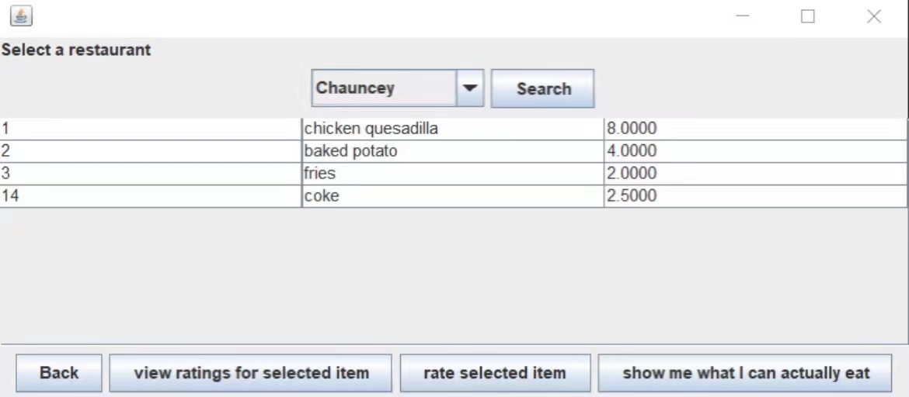
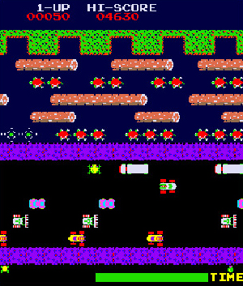

Portfolio
List of projects
-
Capstone Team Project

This is my csse120 class project, the purpose is to use the keyboard to control the robot car to make the specified action. My design uses the optical sensor at the bottom of the robot car, so that the car can drive along the black line. If the red dot is detected, the car will stop and lift the mechanical arm, then put it down and turn around in place, and finally play the voice of "you win" and the music of victory. At the same time, I also use the acoustic sensor in front of the car to detect the distance from the obstacle. If it is too close to the obstacle, the car will stop automatically.
-
Taste Of Terre Haute
This is a project I did in csse333 class. My project at the time was to develop a software allowed Rose-Hulman students and Terre Haute local restaurant managers to register accounts. Rose-Hulman students can either form groups and enter their preferences and diets to get restaurant and food recommendations. Also, they can give ratings about the menuItem and leave comments. The restaurant manager can manage the restaurant and menu item information, they can see the average score of their restaurant and their menu Items.
-
Arcade Game
This is my csse220 class project, we use the Java language to write this arcade game, we designed the level of the terrain, character patterns, monster patterns, bullet shape and scoring mechanism. When the bullet fired by the character hits the monster, the player's score will increase. When the character is attacked by the monster, he will lose HP and score. When HP or score becomes 0, the game ends. When all the monsters in the current level die, you can enter the next level, and the difficulty of the game will increase with the number of levels. I can't find the game pictures at that time, but I found similar game pictures on the Internet. The picture comes from the website: http://www.liketotally80s.com/2007/03/play-80s-arcade-games/